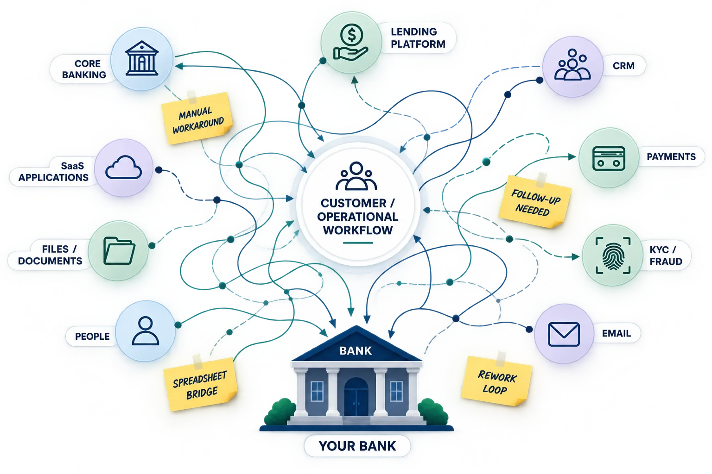
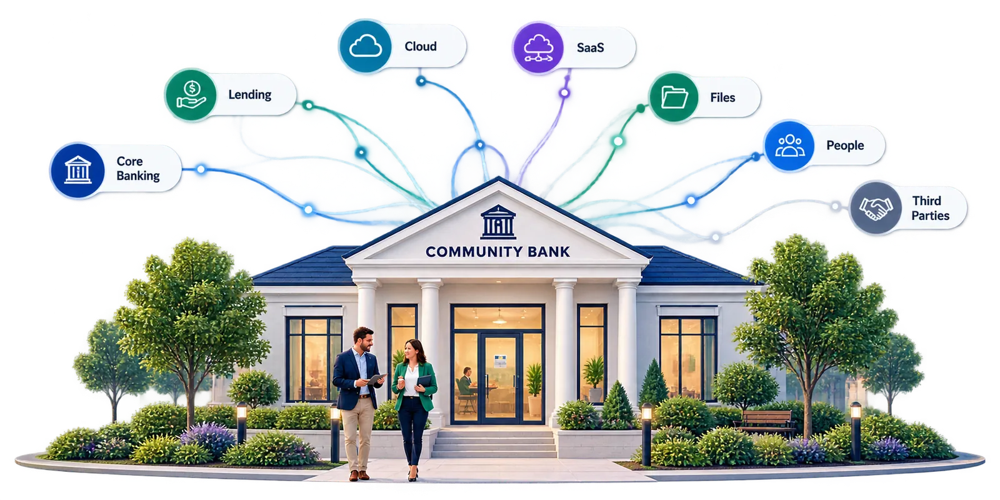
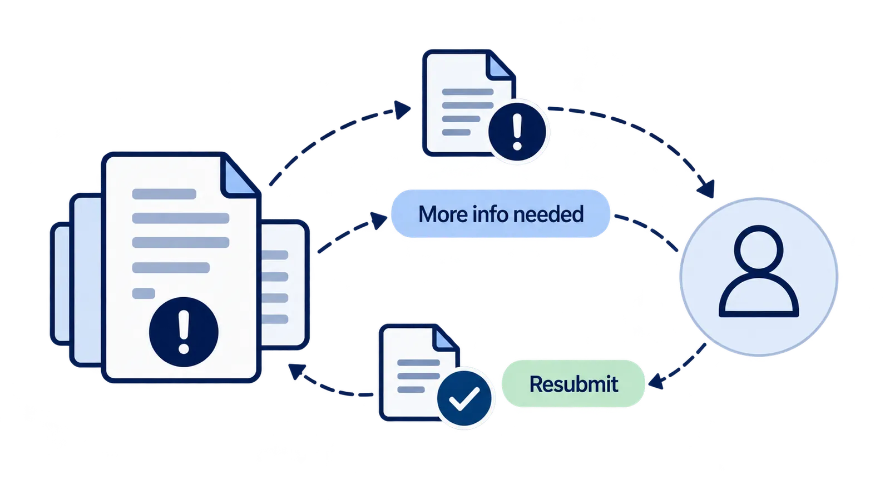
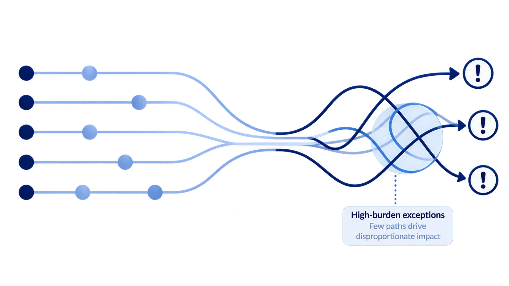

Community Banks
Your bankmay be smaller.Your operationalcomplexity isn't.
Core banking, lending, CRM, payments, KYC, SaaS, files and people all participate in the same customer and operational workflows. RE-ViVE helps you see the execution across them—without requiring a large data program first.

A single process can cross more systems than any one system can see.
The Community Bank Reality
Enterprise-level complexity. Without enterprise-level resources.
Smaller teams still operate sophisticated banking environments.
The challenge is not a lack of technology. It is understanding how work crosses that technology when capacity, analytics and engineering resources are limited.

Lean IT TeamsSmall technology and data teams balance security, compliance, vendor management, projects and daily operations.
Mixed Technology EstatesCore banking, cloud services, SaaS applications, workflow tools and legacy systems often coexist for years.
Distributed DataOperational evidence lives across applications, databases, extracts, documents and files rather than one centralized platform.
Manual ContinuityPeople frequently bridge the gaps between systems through reviews, follow-ups, spreadsheets, email and exception handling.
A modern community bank is not one system.
Core Banking · Lending · Cloud · SaaS · Files · People ·Third Parties
The challenge isn't having these systems. It's seeing the complete process when work moves between them.
Practical Adoption
Operational visibility should not require a new transformation program.
01
Our data isn't in one place.It doesn't need to be centralized first.02
Some important applications are SaaS.Use available operational data without changing the production application.03
We don't have a large data engineering team.Minimize modeling, custom reporting and ongoing engineering work.04
We don't want another system changing production.Read-only source access. No workflow redesign.×
What you don't need first
No centralized data lakeNo workflow remodelingNo production application changesNo large modeling program
✓
What you can start with
Read-only source accessExisting operational dataOne high-impact workflowA lean bank / RE-ViVE working team
A Community Bank Workflow
A process can look simple until you follow the work.
KYC / Documents
Document reworkReview / Approval
Approval loopCore Setup
Manual handoffPayments / Activation
Exception handlingThe bank sees the customer as onboarded. RE-ViVE shows what it took to get there.
RE-ViVE in Action
Focus scarce resources on the real bottlenecks.
RE-ViVE turns execution patterns into focused operational action.
RE-ViVE
EXECUTION INTELLIGENCE
Document Rework
Repeated requests drive effort.

Insight
Finds the conditions creating rework.
Action
Standardize the rework path.
Value
Free capacity · Faster onboarding
Exception Concentration
A few paths consume disproportionate attention.

Insight
Identifies high-burden exception paths.
Action
Focus resources on critical paths.
Value
Better SLA consistency · Lower avoidable effort
Manual Handoffs
People bridge system gaps.
Insight
Reveals manual bridges and handoffs.
Action
Prioritize automation where it removes work.
Value
Less manual effort · Smarter technology investment
AI & Automation for Lean Banking Teams
Automate where it actually removes work.
Execution Intelligence can help community banks understand where automation belongs, how it participates in the workflow, and whether it actually reduced operational effort.
Identify the work worth addressing.
Find repeated manual effort, delays, exception paths and handoffs before deciding where automation or AI should be introduced.
See where automation still needs people.
Observe human intervention, retries, overrides and exception handling as automation becomes part of the banking workflow.
Verify that it actually reduced the burden.
Evaluate whether effort, delay or control risk improved rather than assuming the technology investment produced the intended result.
Start With One Process